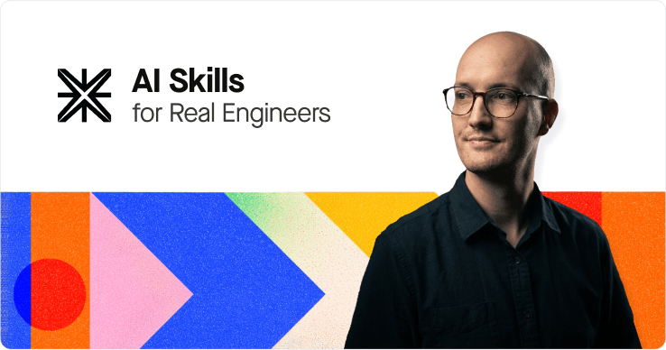

总结
这些 skills 是为真实工程设计的，不是 vibe coding。它们的目标不是“让 agent 写更多”，而是把工程基本功变成可重复实践。
- 四个常见失败模式：不知道自己要什么、团队没有共享语言、缺少反馈回路、代码库架构失控。
- 对应四类修复：
/grill-me逼问需求、GLOSSARY.md建共享语言、TDD/诊断 skill 建反馈回路、/improve-codebase-architecture做深模块。 - skills 分两类：用户显式调用的（编排流程）和模型自动调用的（可复用纪律）。
- 用户调用的 skill 可以调用模型调用的 skill，但不应调用另一个用户调用的 skill。
原文逐段对照翻译
翻译说明：以下按原文顺序逐段翻译，保留四个失败模式、对应 skills 和设计原则；安装命令与长列表概括处理，完整内容见原文。
为什么是“小、可组合”
My agent skills that I use every day to do real engineering—not vibe coding. Developing real applications is hard. Approaches like GSD, BMAD, and Spec-Kit try to help by owning the process. But while doing so, they take away your control and make bugs in the process hard to resolve.
这些是我每天用来做真实工程的 agent skills，不是 vibe coding。开发真实应用很难。GSD、BMAD、Spec-Kit 这类方法试图通过“拥有整个流程”来帮忙，但代价是拿走你的控制权，而且流程本身出 bug 时很难修。
These skills are designed to be small, easy to adapt, and composable. They work with any model. They're based on decades of engineering experience. Hack around with them. Make them your own.
这些 skills 被设计成小、容易改、可组合。它们适用于任何模型，基于几十年的工程经验。你可以随便改、拆、变成自己的。
失败模式一：没人知道自己想要什么
"No-one knows exactly what they want." The most common failure mode in software development is misalignment. You think the dev knows what you want. Then you see what they've built—and you realize it didn't understand you at all. This is just the same in the AI age.
“没有人确切知道自己想要什么。”软件开发最常见的失败模式是错位：你以为开发知道你要什么，看到做出来的东西才发现完全不是。AI 时代也一样。
The fix is a grilling session—getting the agent to ask you detailed questions about what you're building. Use /grill-me for non-code uses, and /grill-with-docs for the same thing plus domain modeling, GLOSSARY.md, and ADRs. These are my most popular skills.
修复方式是“逼问会话”：让 agent 针对你要做的东西不断追问细节。非代码场景用 `/grill-me`；代码场景用 `/grill-with-docs`，它会顺手建立领域模型、更新 `GLOSSARY.md` 和 ADR。这是我最受欢迎的 skills。
失败模式二：没有共享语言
"With a ubiquitous language, conversations among developers and expressions of the code are all derived from the same domain model." At the start of a project, devs and domain experts usually speak different languages. Agents are dropped into a project and asked to figure out the jargon as they go, so they use 20 words where 1 will do.
“有了 ubiquitous language，开发者之间的对话和代码表达都来自同一个领域模型。”项目开始时，开发者和领域专家往往说两种语言。Agent 被丢进项目后只能自己猜行话，于是用 20 个词表达 1 个词就能说清的事。
The fix is a shared language: a document that helps agents decode the jargon used in the project. Example: BEFORE "There's a problem when a lesson inside a section of a course is made 'real'"; AFTER "There's a problem with the materialization cascade." That concision pays off session after session.
修复方式是共享语言：一份帮助 agent 解码项目行话的文档。例子：改前是“课程 section 里的 lesson 被‘变成真实’时有问题”，改后是“materialization cascade 有问题”。这种简洁会在一次次会话里持续回报。
A shared language has many other benefits: variables, functions and files are named consistently; the codebase is easier for the agent to navigate; and the agent spends fewer tokens thinking because it has a more concise language. This is built into /grill-with-docs.
共享语言还有很多好处：变量、函数、文件命名一致；代码库对 agent 更容易导航；语言更简洁，agent 思考时消耗更少 token。这个能力内置在 `/grill-with-docs` 里。
失败模式三：反馈回路不够
"Always take small, deliberate steps. The rate of feedback is your speed limit." You and the agent are aligned on what to build, but the agent still produces crap. It's time to look at your feedback loops. Without feedback on how the code actually runs, the agent is flying blind.
“永远采取小而审慎的步骤。反馈的速度就是你的速度上限。”你和 agent 已经对齐了要做什么，但产出仍然很烂，这时要看反馈回路。没有“代码实际怎么运行”的反馈，agent 就是在盲飞。
You need the usual tranche of feedback loops: static types, browser access, and automated tests. For automated tests, a red-green-refactor loop is critical. I've built a /tdd skill and a /diagnosing-bugs skill that wraps best debugging practices into a disciplined loop, gated phase by phase.
你需要常规的反馈回路：静态类型、浏览器访问、自动化测试。自动化测试里，red-green-refactor 最关键。我做了 `/tdd` skill，以及 `/diagnosing-bugs`，把最佳调试实践包装成有阶段门禁的纪律循环。
失败模式四：架构失控
"Invest in the design of the system every day." "The best modules are deep. They allow a lot of functionality to be accessed through a simple interface." Most apps built with agents are complex and hard to change. Because agents speed up coding, they also accelerate software entropy.
“每天都要投资系统设计。”“最好的模块是深的：用简单接口访问大量功能。”大多数用 agent 构建的应用都复杂、难改。Agent 加速写代码，也加速软件熵增。
The fix is a radical new approach to AI-powered development: caring about the design of the code. This is built into every layer of these skills. /to-spec quizzes you about which modules you're touching before creating a spec. /improve-codebase-architecture surveys a codebase for deepening opportunities and hands you the candidates.
修复方式是认真对待代码设计。这内置在每一层 skills 里：`/to-spec` 在写规格前先考你“要碰哪些模块”；`/improve-codebase-architecture` 扫描代码库，找“加深模块”的机会，把候选交给你。
It is a survey, not a rescue: on a genuinely old codebase it will find real candidates, but it won't untangle the mud for you. Software engineering fundamentals matter more than ever.
它是 survey，不是 rescue：在真正老旧的代码库上会找到真实候选，但不会替你把泥潭解开。软件工程基本功比以往更重要。
Skills 的两类
These split on one axis: who can invoke them. User-invoked skills are reachable only when you type them; their job is to orchestrate. Model-invoked skills can be invoked by you or reached for automatically by the agent when the task fits; they hold the reusable discipline.
按“谁能调用”分两类。用户调用的 skills 只有你输入命令时才触发，职责是编排流程；模型调用的 skills 你可以调，agent 也能在任务匹配时自动调用，承载可复用的纪律。
A user-invoked skill may invoke model-invoked skills, but never another user-invoked one.
用户调用的 skill 可以调用模型调用的 skill，但不能调用另一个用户调用的 skill。
代表性 skills

Engineering user-invoked skills include ask-matt (router), grill-with-docs (grilling plus domain model), triage, improve-codebase-architecture, to-spec, to-tickets, implement, implement-spec, wayfinder, and retro. Model-invoked skills include prototype, diagnosing-bugs, research, tdd, domain-modeling, codebase-design, code-review, pr, and wizard.
工程类用户调用 skills 包括 `ask-matt`（路由）、`grill-with-docs`（逼问 + 领域模型）、`triage`、`improve-codebase-architecture`、`to-spec`、`to-tickets`、`implement`、`implement-spec`、`wayfinder`、`retro`。模型调用 skills 包括 `prototype`、`diagnosing-bugs`、`research`、`tdd`、`domain-modeling`、`codebase-design`、`code-review`、`pr`、`wizard`。
General workflow skills include grill-me, handoff, teach, to-questionnaire, and wait-what. Model-invoked general skills include grilling and writing-for-agents.
通用工作流 skills 包括 `grill-me`、`handoff`、`teach`、`to-questionnaire`、`wait-what`；模型调用的通用 skills 包括 `grilling` 和 `writing-for-agents`。
The core idea is not to own your process, but to give you small, composable practices you can adapt. They work with any model and are meant to be hacked.
核心思想不是“拥有你的流程”，而是给你一组可以自己改的小型、可组合实践。它们适用于任何模型，也鼓励你直接改。
学习者视角
关键收获
- Skills 应该编码工程基本功，而不是魔法提示词。 需求对齐、共享语言、反馈回路、架构设计，都是老问题。
- 共享语言能同时降低沟通成本和 token 成本。 一个准确的术语，胜过一段解释。
- 用户调用 vs 模型调用是重要的架构分层。 编排和执行分开，系统才不会乱。
- 架构 skill 是 survey，不是 rescue。 它帮你找候选，不替你收拾烂摊子。
- 小、可组合、可改，比“大而全”更可持续。
放回课程里看
Matt 的 skills 是 Week 3 的核心案例：skill 不只是“一段提示词”，而是可组合的工程实践单元。和 Superpowers 相比，Matt 更强调“小”和“用户控制”；和 pstack 相比，Matt 更强调“工程基本功”而不是 playbook 路由。
一个反直觉点
很多人以为“给 agent 更多上下文”总是更好。Matt 的共享语言例子说明：更精确、更短的术语，反而能让 agent 思考得更好、花更少 token。
拓展
思考题
- 你的项目里有没有“20 个词说 1 个词”的现象？能否提炼出 5 个共享术语？
- 你现在的 skills 里，哪些是用户调用的编排，哪些是模型调用的纪律？有没有混在一起？
- 为什么“架构 survey”不应该自动变成“架构 rescue”？
/grill-me和 OpenSpec 的propose有什么区别？什么时候用哪个？
练习
为你的项目写一份最小 GLOSSARY.md：
- 选 5 个最容易被误解的术语；
- 每个写一句定义；
- 再写一个“反例”：以前会怎么啰嗦地表达；
- 把 glossary 链接放进
AGENTS.md或CLAUDE.md。